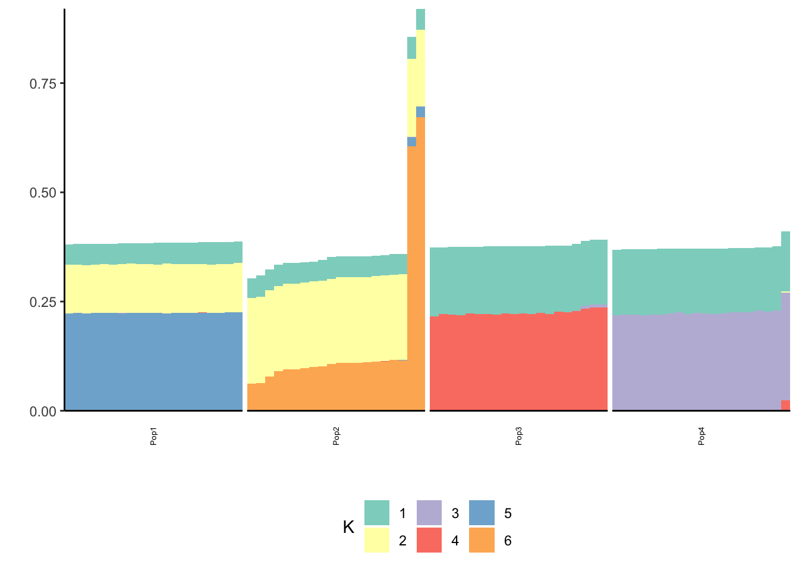
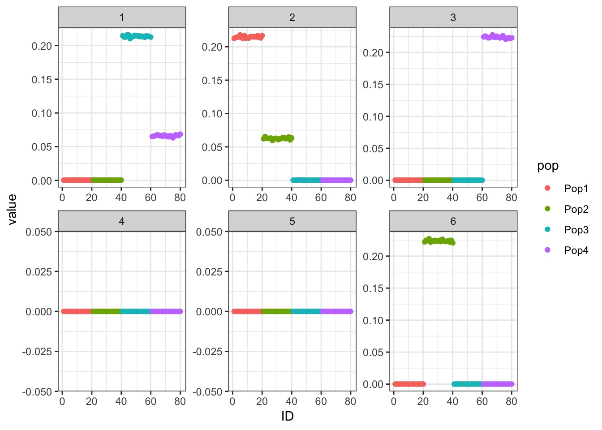

Simpler tree simulation
jhmarcus
2019-05-02
Last updated: 2019-05-03
Checks: 5 1
Knit directory: drift-workflow/analysis/
This reproducible R Markdown analysis was created with workflowr (version 1.2.0). The Report tab describes the reproducibility checks that were applied when the results were created. The Past versions tab lists the development history.
The R Markdown file has unstaged changes. To know which version of the R Markdown file created these results, you’ll want to first commit it to the Git repo. If you’re still working on the analysis, you can ignore this warning. When you’re finished, you can run wflow_publish to commit the R Markdown file and build the HTML.
Great job! The global environment was empty. Objects defined in the global environment can affect the analysis in your R Markdown file in unknown ways. For reproduciblity it’s best to always run the code in an empty environment.
The command set.seed(20190211) was run prior to running the code in the R Markdown file. Setting a seed ensures that any results that rely on randomness, e.g. subsampling or permutations, are reproducible.
Great job! Recording the operating system, R version, and package versions is critical for reproducibility.
Nice! There were no cached chunks for this analysis, so you can be confident that you successfully produced the results during this run.
Great! You are using Git for version control. Tracking code development and connecting the code version to the results is critical for reproducibility. The version displayed above was the version of the Git repository at the time these results were generated.
Note that you need to be careful to ensure that all relevant files for the analysis have been committed to Git prior to generating the results (you can use wflow_publish or wflow_git_commit). workflowr only checks the R Markdown file, but you know if there are other scripts or data files that it depends on. Below is the status of the Git repository when the results were generated:
Ignored files:
Ignored: .Rhistory
Ignored: analysis/.Rhistory
Ignored: analysis/flash_cache/
Ignored: data.tar.gz
Ignored: data/datasets/
Ignored: data/raw/
Ignored: output.tar.gz
Ignored: output/
Unstaged changes:
Modified: analysis/simpler_tree_simulation.Rmd
Note that any generated files, e.g. HTML, png, CSS, etc., are not included in this status report because it is ok for generated content to have uncommitted changes.
These are the previous versions of the R Markdown and HTML files. If you’ve configured a remote Git repository (see ?wflow_git_remote), click on the hyperlinks in the table below to view them.
| File | Version | Author | Date | Message |
|---|---|---|---|---|
| Rmd | 280cc1f | jhmarcus | 2019-05-03 | added printing of noise in simpler |
| html | 280cc1f | jhmarcus | 2019-05-03 | added printing of noise in simpler |
| Rmd | 912c5ff | jhmarcus | 2019-05-03 | added simpler tree sim |
| html | 912c5ff | jhmarcus | 2019-05-03 | added simpler tree sim |
In this analysis I simulate data from the same tree as described in Simple Tree Simulation (also see below) but parameterize the simulation as a factor analysis model i.e. simulating under the model we are fitting. I also removed the additional binomial sampling from the allele frequencies at the tips and just directly modeled Gaussian data.

Import
Here I import the some required packages:
library(ggplot2)
library(dplyr)
library(tidyr)
library(flashier)
source("../code/viz.R")Functions
#' @title Simpler Tree Simulation
#'
#' @description Simulates genotypes under a simple population
#' tree as described in Pickrell and Pritchard 2012 via
#' a factor analysis model:
#'
#' https://journals.plos.org/plosgenetics/article?id=10.1371/journal.pgen.1002967
#'
#' @param n_per_pop number of individuals per population
#' @param p number of SNPs
#' @param sigma_e std. dev of noise
simpler_tree_simulation = function(n_per_pop, p, sigma_e){
n = n_per_pop * 4
L = matrix(0, nrow=4*n_per_pop, ncol=6)
L[1:n_per_pop, 2] = L[1:n_per_pop, 6] = 1
L[(n_per_pop + 1):(2*n_per_pop), 2] = L[(n_per_pop + 1):(2*n_per_pop), 5] = 1
L[(2*n_per_pop + 1):(3*n_per_pop), 1] = L[(2*n_per_pop + 1):(3*n_per_pop), 3] = 1
L[(3*n_per_pop + 1):(4*n_per_pop), 1] = L[(3*n_per_pop + 1):(4*n_per_pop), 4] = 1
Z = matrix(rnorm(p*6, 0, 1), nrow=p, ncol=6)
E = matrix(rnorm(n*p, 0, sigma_e), nrow=n, ncol=p)
Y = L %*% t(Z) + E
res = list(Y=Y, L=L, Z=Z)
return(res)
}
plot_flash_loadings = function(flash_fit, n_per_pop){
l_df = as.data.frame(flash_fit$loadings$normalized.loadings[[1]])
colnames(l_df) = 1:ncol(l_df)
l_df$ID = 1:nrow(l_df)
l_df$pop = c(rep("Pop1", n_per_pop), rep("Pop2", n_per_pop),
rep("Pop3", n_per_pop), rep("Pop4", n_per_pop))
gath_l_df = l_df %>% gather(K, value, -ID, -pop)
p1 = ggplot(gath_l_df, aes(x=ID, y=value, color=pop)) +
geom_point() +
facet_wrap(K~., scale="free") +
theme_bw()
p2 = structure_plot(gath_l_df,
colset="Set3",
facet_grp="pop",
facet_levels=paste0("Pop", 1:4),
keep_leg=TRUE,
fact_type="nonnegative")
return(list(p1=p1, p2=p2))
}Low Noise
I display the true loadings matrix and population covariance matrix for a simulation of 20 individuals per population with 10000 independent SNPs.
set.seed(1234)
n_per_pop = 20
sigma_e = .01
p = 10000
sim_res = simpler_tree_simulation(n_per_pop, p, sigma_e)
Y = sim_res$Y
L = sim_res$L
LLt = L %*% t(L)
plot_covmat(LLt)
| Version | Author | Date |
|---|---|---|
| 912c5ff | jhmarcus | 2019-05-03 |
l_df = data.frame(L)
colnames(l_df) = paste0("K", 1:6)
l_df$iid = 1:nrow(L)
l_df$pop = c(rep("Pop1", n_per_pop), rep("Pop2", n_per_pop),
rep("Pop3", n_per_pop), rep("Pop4", n_per_pop))
gath_l_df = l_df %>% gather(K, value, -iid, -pop)
p = ggplot(gath_l_df, aes(x=iid, y=value, color=pop)) +
geom_point() +
facet_wrap(K~., scale="free") +
theme_bw()
p
| Version | Author | Date |
|---|---|---|
| 912c5ff | jhmarcus | 2019-05-03 |
Here we can see the block-like structure to the covariance matrix.
Greedy
I fit greedy flash:
flash_fit = flashier::flashier(Y,
greedy.Kmax=10,
prior.type=c("nonnegative", "point.normal"),
ebnm.param=list(fixg=TRUE, g=list(pi0=0, a=1, mu=0)),
var.type=0,
backfit="none")Initializing flash object...
Adding factor 1 to flash object...
Adding factor 2 to flash object...
Adding factor 3 to flash object...
Adding factor 4 to flash object...
Adding factor 5 to flash object...
Adding factor 6 to flash object...
Adding factor 7 to flash object...
Factor doesn't increase objective and won't be added.
Nullchecking 6 factors...
Wrapping up...
Done.Lhat = flash_fit$loadings$normalized.loadings[[1]]
p_res = plot_flash_loadings(flash_fit, n_per_pop)
print(p_res$p1)
| Version | Author | Date |
|---|---|---|
| 912c5ff | jhmarcus | 2019-05-03 |
print(p_res$p2)
| Version | Author | Date |
|---|---|---|
| 912c5ff | jhmarcus | 2019-05-03 |
print(paste0("objective=", flash_fit$objective))[1] "objective=72473.5307279732"print(paste0("est_sd=", sqrt(1 / flash_fit$fit$tau)))[1] "est_sd=0.188101535612845"print(plot_covmat(Lhat %*% t(Lhat)))
We can see the loadings matrix is recovered pretty well.
Backfit
I add a final backfitting step.
flash_fit = flashier::flashier(Y,
flash.init = flash_fit,
prior.type=c("nonnegative", "point.normal"),
ebnm.param=list(fixg=TRUE, g=list(pi0=0, a=1, mu=0)),
var.type=0,
backfit="final",
backfit.order="dropout",
backfit.reltol=10)Initializing flash object...
Adding factor 7 to flash object...
Factor doesn't increase objective and won't be added.
Backfitting 6 factors...
Nullchecking 6 factors...
Wrapping up...
Done.Lhat = flash_fit$loadings$normalized.loadings[[1]]
p_res = plot_flash_loadings(flash_fit, n_per_pop)
print(p_res$p1)
| Version | Author | Date |
|---|---|---|
| 912c5ff | jhmarcus | 2019-05-03 |
print(p_res$p2)
| Version | Author | Date |
|---|---|---|
| 912c5ff | jhmarcus | 2019-05-03 |
print(paste0("objective=", flash_fit$objective))[1] "objective=2169849.35240762"print(paste0("est_sd=", sqrt(1 / flash_fit$fit$tau)))[1] "est_sd=0.0101417353225806"print(plot_covmat(Lhat %*% t(Lhat)))
The loadings matrix is recovered pretty well and also looks pretty similar to the greedy run
Medium Noise
Now I simulate data with a standard deviation of the errors set to be 5 times higher than the last simulation:
n_per_pop = 20
sigma_e = .5
p = 10000
sim_res = simpler_tree_simulation(n_per_pop, 10000, sigma_e)
Y = sim_res$YGreedy
flash_fit = flashier::flashier(Y,
greedy.Kmax=10,
prior.type=c("nonnegative", "point.normal"),
ebnm.param=list(fixg=TRUE, g=list(pi0=0, a=1, mu=0)),
var.type=0,
backfit="none")Initializing flash object...
Adding factor 1 to flash object...
Adding factor 2 to flash object...
Adding factor 3 to flash object...
Adding factor 4 to flash object...
Adding factor 5 to flash object...
Adding factor 6 to flash object...
Adding factor 7 to flash object...
Factor doesn't increase objective and won't be added.
Nullchecking 6 factors...
Wrapping up...
Done.Lhat = flash_fit$loadings$normalized.loadings[[1]]
p_res = plot_flash_loadings(flash_fit, n_per_pop)
print(p_res$p1)
| Version | Author | Date |
|---|---|---|
| 912c5ff | jhmarcus | 2019-05-03 |
print(p_res$p2)
| Version | Author | Date |
|---|---|---|
| 912c5ff | jhmarcus | 2019-05-03 |
print(paste0("objective=", flash_fit$objective))[1] "objective=-745056.156106639"print(paste0("est_sd=", sqrt(1 / flash_fit$fit$tau)))[1] "est_sd=0.538844063230669"print(plot_covmat(Lhat %*% t(Lhat)))
The greedy solution recovers the loadings pretty well.
Backfit
flash_fit = flashier::flashier(Y,
flash.init = flash_fit,
prior.type=c("nonnegative", "point.normal"),
ebnm.param=list(fixg=TRUE, g=list(pi0=0, a=1, mu=0)),
var.type=0,
backfit="final",
backfit.order="dropout",
backfit.reltol=10)Initializing flash object...
Adding factor 7 to flash object...
Factor doesn't increase objective and won't be added.
Backfitting 6 factors...
Nullchecking 6 factors...
Wrapping up...
Done.Lhat = flash_fit$loadings$normalized.loadings[[1]]
p_res = plot_flash_loadings(flash_fit, n_per_pop)
print(p_res$p1)
| Version | Author | Date |
|---|---|---|
| 912c5ff | jhmarcus | 2019-05-03 |
print(p_res$p2)
| Version | Author | Date |
|---|---|---|
| 912c5ff | jhmarcus | 2019-05-03 |
print(paste0("objective=", flash_fit$objective))[1] "objective=-710595.815816299"print(paste0("est_sd=", sqrt(1 / flash_fit$fit$tau)))[1] "est_sd=0.501086281220637"print(plot_covmat(Lhat %*% t(Lhat)))
The backfitting begins to get funky / noisy.
High Noise
Now the standard deviation of the errors is 10 times higher than the original simulation
n_per_pop = 20
sigma_e = 1.0
p = 10000
sim_res = simpler_tree_simulation(n_per_pop, p, sigma_e)
Y = sim_res$YGreedy
flash_fit = flashier::flashier(Y,
greedy.Kmax=10,
prior.type=c("nonnegative", "point.normal"),
ebnm.param=list(fixg=TRUE, g=list(pi0=0, a=1, mu=0)),
var.type=0,
backfit="none")Initializing flash object...
Adding factor 1 to flash object...
Adding factor 2 to flash object...
Adding factor 3 to flash object...
Adding factor 4 to flash object...
Adding factor 5 to flash object...
Adding factor 6 to flash object...
Adding factor 7 to flash object...
Factor doesn't increase objective and won't be added.
Nullchecking 6 factors...
Wrapping up...
Done.Lhat = flash_fit$loadings$normalized.loadings[[1]]
p_res = plot_flash_loadings(flash_fit, n_per_pop)
print(p_res$p1)
| Version | Author | Date |
|---|---|---|
| 912c5ff | jhmarcus | 2019-05-03 |
print(p_res$p2)
| Version | Author | Date |
|---|---|---|
| 912c5ff | jhmarcus | 2019-05-03 |
print(paste0("objective=", flash_fit$objective))[1] "objective=-1238486.22414427"print(paste0("est_sd=", sqrt(1 / flash_fit$fit$tau)))[1] "est_sd=1.0288417142139"print(plot_covmat(Lhat %*% t(Lhat)))
The greedy solution still recovers the loadings well!
Backfit
flash_fit = flashier::flashier(Y,
flash.init = flash_fit,
prior.type=c("nonnegative", "point.normal"),
ebnm.param=list(fixg=TRUE, g=list(pi0=0, a=1, mu=0)),
var.type=0,
backfit="final",
backfit.order="dropout",
backfit.reltol=10)Initializing flash object...
Adding factor 7 to flash object...
Factor doesn't increase objective and won't be added.
Backfitting 6 factors...
Nullchecking 6 factors...
Factor 5 removed, increasing objective by 1.234e-01.
Adding factor 7 to flash object...
Factor doesn't increase objective and won't be added.
Backfitting 6 factors...
Nullchecking 6 factors...
Factor 4 removed, increasing objective by 8.795e-02.
Adding factor 7 to flash object...
Factor doesn't increase objective and won't be added.
Backfitting 6 factors...
Nullchecking 6 factors...
Wrapping up...
Done.Lhat = flash_fit$loadings$normalized.loadings[[1]]
p_res = plot_flash_loadings(flash_fit, n_per_pop)
print(p_res$p1)
| Version | Author | Date |
|---|---|---|
| 912c5ff | jhmarcus | 2019-05-03 |
print(p_res$p2)
| Version | Author | Date |
|---|---|---|
| 912c5ff | jhmarcus | 2019-05-03 |
print(paste0("objective=", flash_fit$objective))[1] "objective=-1208183.23583764"print(paste0("est_sd=", sqrt(1 / flash_fit$fit$tau)))[1] "est_sd=0.999720375541533"print(plot_covmat(Lhat %*% t(Lhat)))
sessionInfo()R version 3.5.1 (2018-07-02)
Platform: x86_64-apple-darwin13.4.0 (64-bit)
Running under: macOS 10.14.2
Matrix products: default
BLAS/LAPACK: /Users/jhmarcus/miniconda3/lib/R/lib/libRblas.dylib
locale:
[1] en_US.UTF-8/en_US.UTF-8/en_US.UTF-8/C/en_US.UTF-8/en_US.UTF-8
attached base packages:
[1] stats graphics grDevices utils datasets methods base
other attached packages:
[1] RColorBrewer_1.1-2 flashier_0.1.1 tidyr_0.8.2
[4] dplyr_0.8.0.1 ggplot2_3.1.0
loaded via a namespace (and not attached):
[1] Rcpp_1.0.0 compiler_3.5.1 pillar_1.3.1
[4] git2r_0.23.0 plyr_1.8.4 workflowr_1.2.0
[7] iterators_1.0.10 viridis_0.5.1 tools_3.5.1
[10] digest_0.6.18 lattice_0.20-38 viridisLite_0.3.0
[13] evaluate_0.12 tibble_2.0.1 gtable_0.2.0
[16] pkgconfig_2.0.2 rlang_0.3.1 foreach_1.4.4
[19] Matrix_1.2-15 parallel_3.5.1 yaml_2.2.0
[22] ebnm_0.1-17 xfun_0.4 gridExtra_2.3
[25] withr_2.1.2 stringr_1.4.0 knitr_1.21
[28] fs_1.2.6 rprojroot_1.3-2 grid_3.5.1
[31] tidyselect_0.2.5 glue_1.3.0 R6_2.4.0
[34] rmarkdown_1.11 mixsqp_0.1-115 ashr_2.2-37
[37] purrr_0.3.0 reshape2_1.4.3 magrittr_1.5
[40] whisker_0.3-2 MASS_7.3-51.1 codetools_0.2-16
[43] backports_1.1.3 scales_1.0.0 htmltools_0.3.6
[46] assertthat_0.2.0 colorspace_1.4-0 labeling_0.3
[49] stringi_1.2.4 pscl_1.5.2 doParallel_1.0.14
[52] lazyeval_0.2.1 munsell_0.5.0 truncnorm_1.0-8
[55] SQUAREM_2017.10-1 crayon_1.3.4